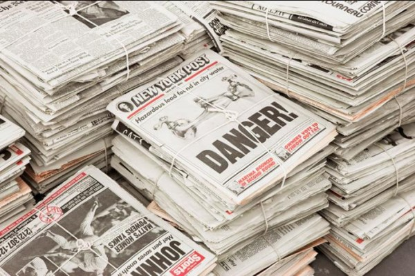

-
Arts Sections: The Last Newspaper at The New Museum
by Sam Biederman November 22, 2010
The death of print media is a favorite topic of people in the media business. Readers and reporters turn online in ever-greater numbers, while at the same time bemoaning the disappearance of physical newspapers and magazines. We’re willing but somehow-helpless destroyers of our own environment: it’s global warming writ small.
The Last Newspaper, now on exhibition at The New Museum, gives a terrific and deeply felt examination of what we’re losing. If this seems like a better exhibition for, say, a design museum, it’s useful to remember the role that newspapers have played in art since their emergence as the fourth estate. At once a conduit for, and a representation of, culture, society, and the world, the newspaper has provided artists of many stripes with an ideal stand-in for received wisdom. Hence the presence of newspapers in Cubist collage, in Cornell boxes, or in Warhol’s silkscreens: newspapers are the voice of authority, and can literally be torn apart for art’s sake.The pieces in The Last Newspaper don’t reach so far back, but they reference this tradition. Jacob Fabricius’s Old News Mexico, part of a project in which artists were invited to alter selections of existing newspapers to include in a new edition—a collage that not only includes bits of newsprint ala Georges Braque, but comprised completely of newspaper itself. The result, editions of which are piled up for visitors to take home, is a moveable feast, a celebration of the easy possession of images and information the broadsheet form gives readers. It’s fun to walk out of a museum with art in hand: I have pages 16 and 17, Begoña Morales’ paper-cut genitalia, hanging above my desk.
But as the title of the show suggests, physical newspapers are on their way out. Which is why some of the show’s best pieces directly address this shift from physical to ethereal. Hans Haacke’s News is at first an unassuming sight, a beat-up daisy printer sitting glumly on a card table in the middle of the gallery. But when a news item comes to the printer through the wires (in its original incarnation, the piece was connected to satellite news feeds; now it gets RSS), the old machine noisily starts up, producing a fresh news story, which is then added to the thick ringlets of paper gathering appealingly below the desk. The piece, first created when electronic media had already begun to alter the gathering and dissemination of information, elegantly expresses the mixed blessing of instant news: the magic of information arriving suddenly out of the ether is darkened by the way that data suddenly directs our lives. When the printer comes to life, the whole gallery jumps to attention at the noise: we’re at its command. It’s a prescient piece, and still pertinent—as if to underscore that point, when I visited, the item being printed was entitled “ENDURING PASSION.”
Also touching on this theme is Vinyl #1 (Karl Holmqvist Reads Old News, August 11, 2001). In this recording, available at The New Museum both at a listening station and in the gallery elevator, the artist begins by slowly repeats certain phrases: “Old news… old news… There’s nothing new… about old news…” before taking off into some kind of song. “A kid like you could never understand/ A kid like you could never understand/ There’s nothing new about old news.” In addition, the listener hears Holmqvist turning the page of a newspaper and reading a few lines from it. The mode of recording utilized by Vinyl #1 is as outdated as the newspaper Holmqvist is reading from. And, as he says, there is an emptiness in a young person’s understanding of “old news.” The forms that once brought us the new are disappearing—and when newspaper content is transferred to other media (as it is in Vinyl #1), certain meanings become unmoored.
Without its physical bonds, the amount of information we can receive quickly grows from impressive to unmanageable to harrowing. An interesting early prediction of electronic media’s impact on news, Sarah Charlesworth’s Movie-Television-News-History, June 21, 1979 touches on how volume affects meaning. The piece displays the front page of 26 American newspapers, each carrying the story of Bill Stewart, an ABC News correspondent murdered in Samoza’s Nicaragua. But for the mastheads, all text is stripped away from the broadsheets, and only images of Stewart’s assassination, taken from video footage, remain. The image of the murder, first copied and recopied and then printed again and again and again becomes not less but more disturbing. And as his murder is re-depicted nationwide, Stewart’s personality dissipates and the man himself becomes ghostly— the sort of being a real person can’t understand. Movie-Television-News-History focuses in on one case of how endless reproduction and distribution can obfuscate lives and events. 31 years later, now that we’ve gone digital, this process is repeated for nearly every story that goes out on the wire.
The show’s not without some missteps. Spaced throughout the exhibit are viewing stations where visitors can watch famous philosophers reflect on Kant’s “Perpetual Peace.” Not only is this discussion’s relation to the exhibition a bit obscure (newspapers express the current state of the world, which is un-peaceful?) but it’s just hard to stand and listen to the professors hold forth. Further, the few pieces that examine digital media are unenlightening and are put to shame by those focused on newspapers or early electronic media.
Even with these flaws, The Last Newspaper has an impressive cohesion—rare for a group show organized around a theme as broad as “newspapers and news.” Indeed, welcoming, and even playing up, a multiplicity of voices works uniquely to the show’s advantage. How else to express simultaneously the ubiquity and the multiplicity of cultural meanings that newsprint once had? A newspaper is, after all, a collection of different voices, with each reporter trying to tell society’s story, one section or dispatch at a time. In this way, a paper is not unlike an art exhibit, with the editor serving as curator. This notion isn’t lost on The Last Newspaper. In the show’s final room a group of live artists-cum-writers gather around a table, working on a weekly newspaper, The New City Reader, of which every visitor gets a copy. (Disclosure: Idiom’s own editor, a term used loosely in this context, will be collaborating on an upcoming edition of The New City Reader -ed.)
In one way or another, each piece in The Last Newspaper mourns the loss of the editor by exploring our inability to process and sort through all the information to which we’re subject. Which is why we need editors to organize our news, a service we lose, in a certain sense, when we lose the physical newspaper. Just as I wouldn’t want to see all the art in the world (or even all the art about newspapers) I don’t want to read all the news in the world either. Curating and editing are both an art in themselves, a fact for which The Last Newspaper provides ample evidence and appreciation.